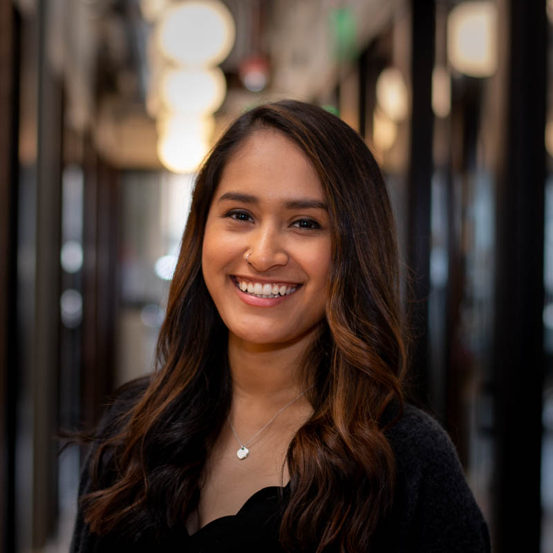
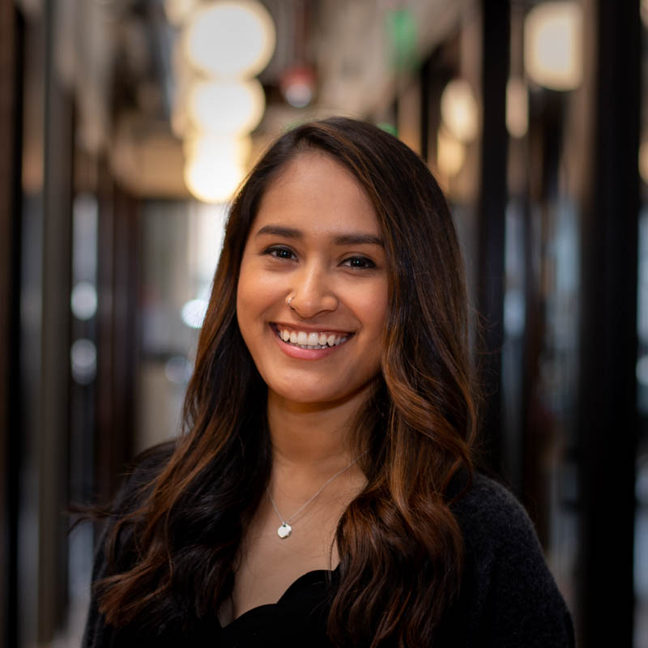

Loading...
Paloma Hennessy
Front-End Developer
ABOUT ME


I am a front-end web developer based in Seattle, WA. After graduating from Willamette University with a degree in Psychology and Studio Art, I decided to persue a career in web development and ux design. After earning a certificate from General Assembly's Web Development Immersive course, I began working as a visual designer for a small start up and working as a freelance font-end web developer. I currently work at Voglio where I am responsible for desiging and developing web applications for our clients. As a hybrid designer/developer I believe that web experiences should be intuitive, simple and enjoyable.
Outside of work you can probably find me hiking, running or re-watching The Office for the millionth time.